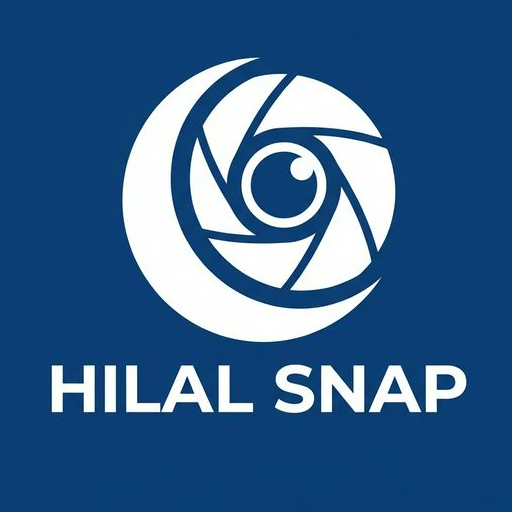
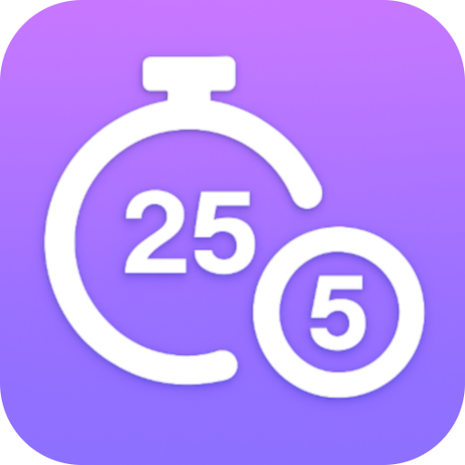
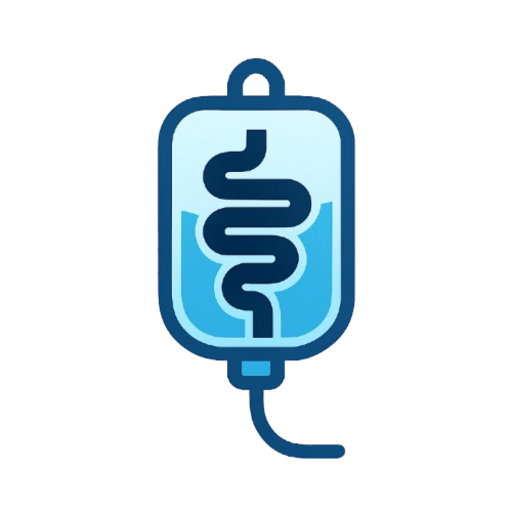
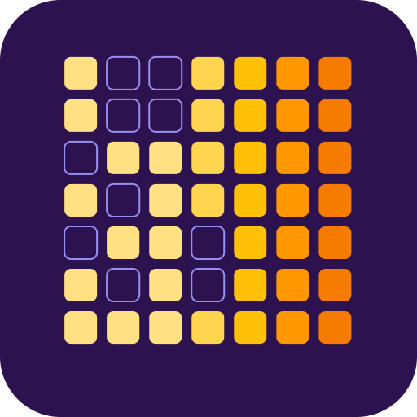

Praktisi Medis. Inovator Digital
Halo, saya dr. Sapto Sutardi. Sebagai seorang dokter yang bertugas di salah satu Puskesmas di Kab. Lombok Barat, saya suka melihat langsung bagaimana teknologi dapat menjembatani kesenjangan dalam pelayanan kesehatan maupun produktivitas sehari-hari.
Perjalanan saya sebagai programmer lepas sejak tahun 2009—melintasi era JavaME, Kotlin, hingga kini berlabuh di Flutter—serta nongkrong di komunitas teknologi Lombok Dev, berbagai kondisi ini menjadi latar belakang terbentuknya DR SAPTO LABS sebagai ruang menyalurkan ide dan inovasi saya.
Asisten pribadi untuk menyimpan dan mengirim data penting Anda secepat kilat. 100% Gratis, Offline, dan Aman di HP Anda.
Lihat Selengkapnya
Pemantauan *new moon* (hilal) dengan Augmented Reality, seakurat standar JPL Horizons.

Timer pomodoro dengan fitur *tracking* fokus dan latar belakang musik penunjang konsentrasi.

Kalkulator presisi untuk kebutuhan cairan diare anak, disesuaikan dengan standar IDAI.

Tracker sederhana nan fungsional sebagai ladang amal pembentuk kebiasaan (habit) baik harian.
Penilai dan pencatat status gizi anak secara akurat dengan menggunakan standar pertumbuhan WHO.